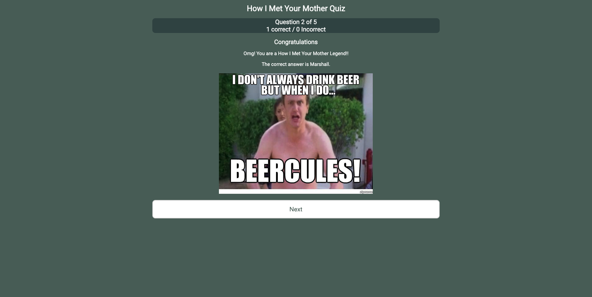

The Myth. The Man. The Dev.
GARRETT JAMES
Dedicated to an optimal user experience. Team player with an eye for detail. Goal-oriented and driven.
Recent Work
How I Met Your Mother Quiz
Trivia application that tests your knowledge of the TV show How I Met Your Mother.
Skills
Languages
Frameworks / Libraries
Databases
About Me
I am a reformed strategic business development professional turned developer, dedicated to a beautiful, optimal user experience. I'm a creative and detail orientated individual who can express web development qualities through programming. I am a recent graduate of Thinkful's full-time online web development program. I enjoy working as a part of a team that motivates and helps me grow in my skills. Through the years, I have worked on various projects with a fair amount of diversity. When I am not working, I believe in taking digital detox by exploring new places, exploring yoga and playing competitive basketball.